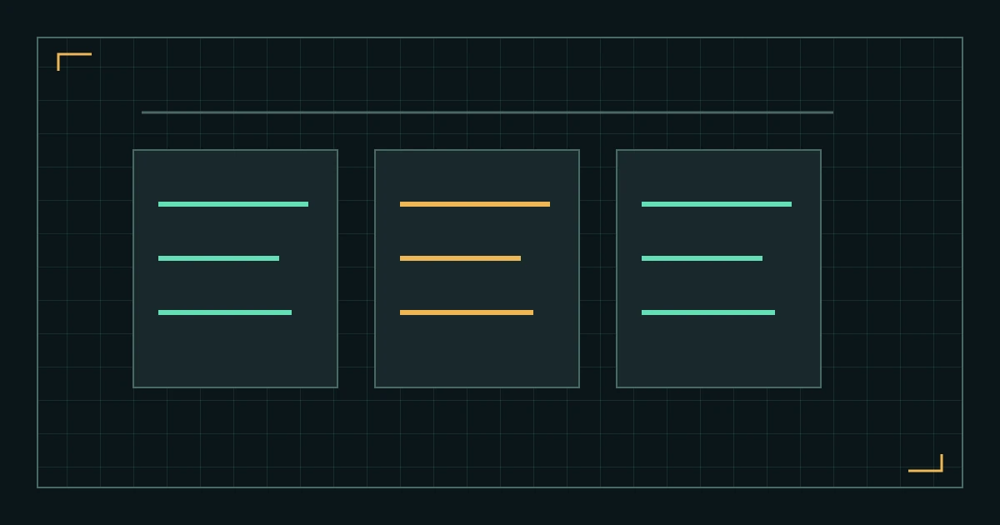

%%T10_EYEBROW%%
%%T10_TITLE%%
%%T10_SUMMARY%%
本页线路
%%T10_H2_1%%
%%T10_TEXT_1%%
%%T10_RECHECK_INTRO%%
- %%T10_RECHECK_1_MARK%%
%%T10_RECHECK_1_TITLE%%
%%T10_RECHECK_1_TEXT%%
- %%T10_RECHECK_2_MARK%%
%%T10_RECHECK_2_TITLE%%
%%T10_RECHECK_2_TEXT%%
- %%T10_RECHECK_3_MARK%%
%%T10_RECHECK_3_TITLE%%
%%T10_RECHECK_3_TEXT%%
%%T10_H2_2%%
%%T10_TEXT_2%%
- %%T10_POINT_1%%
- %%T10_POINT_2%%
- %%T10_POINT_3%%
%%T10_H2_3%%
%%T10_TEXT_3%%
%%T10_QUOTE%%
%%T10_QUOTE_CITE%%
%%T10_H2_4%%
%%T10_TEXT_4%%
%%T10_FAQ_LABEL%%
%%T10_FAQ_Q_1%%
%%T10_FAQ_A_1%%
%%T10_FAQ_Q_2%%
%%T10_FAQ_A_2%%
%%T10_FAQ_Q_3%%
%%T10_FAQ_A_3%%
%%T10_SOURCES_LABEL%%
%%AUTHOR_BIO%%
- %%T10_SOURCE_TITLE_1%%
%%T10_SOURCE_NOTE_1%%
- %%T10_SOURCE_TITLE_2%%
%%T10_SOURCE_NOTE_2%%